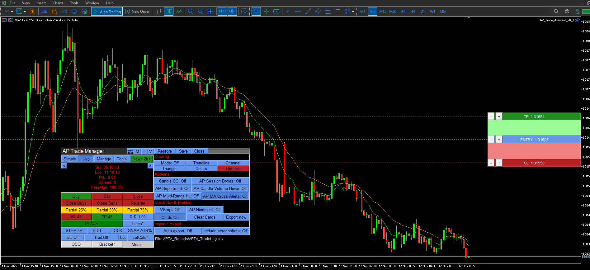
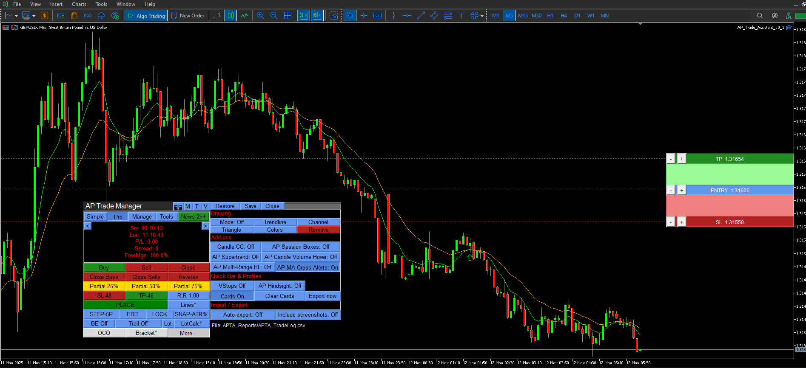

AP Trade Assistant (MT5)
AP Trade Assistant is a compact, broker-safe MT5 utility that turns your chart into a fast, disciplined trade workstation. It handles entries, exits, partials, breakeven+, OCO/Bracket logic, trailing stops and scheduled-style actions from a clean dockable panel. Pure MQL5 (no DLL/WebRequest), validator-friendly, and designed for live charts (not Strategy Tester).
What it does
- One-tap execution: Buy/Sell market plus all four pending types (Buy/Sell Stop, Buy/Sell Limit) from the panel, auto-sized by fixed lots or % balance risk.
- Lines Mode trading: toggle Lines, drag Entry/SL/TP on chart, snap to grid/ATR steps, then press PLACE. The EA chooses market vs pending, applies clamps, tags orders and can pair them as OCO/Bracket.
- Protection suite: breakeven+ with offset, unified trailing (Fixed, ATR, MA, SAR, Fractal, Prev-Bar) with hard ratchet, plus optional Virtual Stops with server SL/TP fallback.
- Position control: partial closes (25/50/75 or custom), Close Buys/Sells/All, Delete Pendings and safe Reverse with spread/freeze guards.
- OCO / Bracket: paired pendings automatically cancel the sibling on fill; market fills can auto-attach TP/SL as a bracket.
- Manage workbench: side drawer listing live tickets (Ticket | Side | Lots | Entry | SL | TP | P/L | Trail | Age). Click a row to drive partials/BE/Trail from the main panel.
- Main Display Box (MDB): spread, server/local times, symbol P/L, margin badge and mode badges (Lines, OCO, Trail, Virtual, etc.).
- News glance: minimal upcoming news panel with impact color and countdown (informational only; never blocks trading).
- Tools & overlays: drawing mode (trendline/channel/triangle), candle countdown, session boxes, multi-range, MA cross, Supertrend, hover volume tooltips, screenshot button.
- Hindsight & presets: one-click trade snapshots and CSV journal export, plus settings export/import (JSON) for panel geometry and per-symbol/TF presets.
How you use it
- Install and attach AP Trade Assistant to a live or demo MT5 chart (M1–D1) with Algo Trading enabled, then place the panel where you like.
- Choose your risk mode on the trade strip: % for percent-risk sizing or Lot for fixed lots. MDB shows spread, times, P/L and margin badge.
- For quick entries, use the trade strip buttons for market orders or pending types. The EA runs OrderCheck & margin checks and floors lots to broker step.
- For line-based execution, enable Lines Mode, drag Entry/SL/TP, then press PLACE. Optionally toggle OCO and Bracket for paired pendings / auto TP/SL.
- Turn on BE+ and a trailing mode to protect trades automatically. Use partial buttons or the Manage drawer to scale out and adjust individual positions.
- Use Tools/Info drawers for overlays, news glance, screenshots, hindsight cards and preset import/export.
The utility sends orders and modifications in response to your panel actions. It is not a fully automatic strategy and does not run in the Strategy Tester. Tester cannot drive the UI or multi-ticket book, so use a live or demo chart only.
Inputs (key groups)
| Core & routing | Example |
|---|---|
| Symbols / magic / comments to manage | current symbol, magic=0 |
| Risk mode | % balance or fixed lot |
| Default risk percent | 0.5–1.0% |
| Default lot size | 0.10 |
| Max slippage / deviation policy | soft retry |
| Protection | Example |
|---|---|
| Breakeven trigger & offset | +1R, +10 pts |
| Trailing mode | Fixed / ATR / MA / SAR / Fractal / Prev-bar |
| Trail start / step | start 1R, step 0.5R |
| Virtual Stops enabled | true/false |
| Daily loss / equity lock | -5% equity |
| Partials & panels | Example |
|---|---|
| Preset partial buttons | 25/50/75% |
| Custom partial size | e.g. 33% |
| Manage drawer filters | symbol / magic / all |
| Show overlays (sessions, MA, Supertrend…) | on/off per tool |
| Misc & journal | Example |
|---|---|
| Theme / panel corner | dark / bottom-right |
| Enable screenshots & journal | true |
| Settings export/import | per symbol/TF JSON |
| News glance source / refresh | built-in, 60s |
Parameter names and exact defaults are documented in the Quick Start and inline tooltips inside MT5. This table is a high-level map of where the main behaviours live when you build your own presets.
Validator & safety notes
- No DLL/WebRequest. All logic is pure MQL5 with OrderCheck and OrderCalcMargin run before every send.
- Lots are floored to broker minimum and step; SL/TP and price adjustments respect stop/freeze levels.
- Timer and logging are throttled to stay Strategy-Tester and validation friendly, though the panel is intended for live/demo charts.
- Virtual Stops are local: the EA sends market exits at your thresholds. For critical risk, pair them with server-side SL/TP via Bracket mode.
Screenshots


 

Version
v1.4 — initial public release.